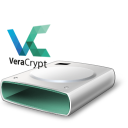

Es muy probable que desees tener parte de tus datos cifrados para poder almacenarlo en una nube pública o simplemente quieras cifrar el contenido almacenado en tu Raspberry.
Quizás quieras cifrar un número de archivos que hay en un PC compartido con otras personas y este contenido lo tengas sincronizado con Syncthing hacia tu Raspberry.
En tu Raspberry, montarás el Volumen descifrado en otra carpeta, que estará sincronizada también con Syncthing a tu movil, pudiendo ver o editar los archivos en todo momento.
Hay varios métodos como hacerlo que os explicaré en siguientes artículos y Podcast, pero hoy voy a explicaros como hacerlo mediante Veracrypt, una derivación de Truecrypt, que supuestamente Veracrypt a solucionado los problemas encontrados en la auditoria de seguridad.
Veracrypt es una herramienta que permitirá crear un único archivo cifrado de un tamaño que determinaremos en el momento de la creación, y dentro de él estarán todos los archivos que deseemos guardar. Para poder editar, leer,… estos archivos, montaremos el archivo cifrado con Veracrypt en una carpeta vacía, como si se tratase de un usb o disco duro.
Es totalmente multiplataforma y podemos utilizar interfaz gráfica desde el escritorio.
En este Post os voy a explicar como hacerlo desde la terminal, pero si os resulta muy complicado crear el contenedor cifrado desde la terminal, hacerlo desde un PC y sincronizarlo con vuestra Raspberry.
En Ubuntu lo instalaríamos mediante PPA:
sudo add-apt-repository ppa:unit193/encryption
sudo apt-get update
sudo apt install veracrypt
Instalamos las siguientes dependencias:
sudo apt-get update
sudo apt-get install libfuse-dev makeself libwxbase3.0-0v5
Instalamos la última versión de Veracrypt que podemos encontrar en este enlace:
cd
mkdir veracryptfiles
cd veracryptfiles
wget -L -O veracrypt-1.21-raspbian-setup.tar.bz2 https://launchpad.net/veracrypt/trunk/1.21/+download/veracrypt-1.21-raspbian-setup.tar.bz2
Extraemos el archivo descargados:
tar -vxjf ./veracrypt-1.21-raspbian-setup.tar.bz2
chmod +x veracrypt-1.21-setup-*
Instalamos ejecutando el script:
./veracrypt-1.21-setup-console-armv7
Ahora seguiremos los pasos que nos pedirá el programa:
1 (instalar)Enter (aceptar la licencia)yesPara desinstalar:
rm -r veracryptfiles
Primero crearemos una carpeta donde queremos montar el volumen. Por ejemplo:
mkdir -p /media/veracrypt
Vamos a crear nuestro volumen, para ello teclearemos este comando y Veracrypt nos hará una serie de preguntas que os explico a continuación. Recuerda, como te he comentado, que si te resulta complejo este paso, crealo desde tu PC y sincronízalo con tu Raspberry.
veracrypt -t -c
Ahora veracrypt nos preguntará:
1$HOME/archivo_cifrado(sizeK/size[M]/sizeG) por ejemplo 50M (50Mb)15ENTERENTERPara montar un volumen ya creado, como la mayoría de cifrados en GNU/Linux, el comando sería:
veracrypt <carpeta_origen> <carpeta_montaje>
Ahora vamos a seguir el ejemplo práctico:
veracrypt $HOME/archivo_cifrado /media/veracrypt
Ahora te preguntará que ingreses el PIM, el archivo de claves y si has creado un volumen normal, no oculto. Ni no has ingresado nada de esto, pulsa a todo ENTER, ENTER, ENTER.
Ya tendrás el volumen montado en la ruta que has especificado. Si quieres que la próxima vez no te pregunte nada al montar:
veracrypt $HOME/archivo_cifrado /media/veracrypt --pim=0 --keyfiles= --protect-hidden=no
Para desmontar todas las unidades montadas con veracrypt:
veracrypt -d
veracrypt -d <carpeta_origen>
Alias puede ser una buena idea si no queremos recordar la ruta de las carpetas:
Enviar mediante printf a .bashrc nuestro comando con las carpetas que vamos a utilizar y el alias, en mi caso, veracrypt_m.
printf "\nalias veracrypt_m=\"veracrypt $HOME/veracrypt /media/veracrypt --pim=0 --keyfiles= --protect-hidden=no\"" >> .bashrc
Para desmontar, utilizaremos el alias veracrypt_d.
printf "\nalias veracrypt_d=\"veracrypt -d $HOME/veracrypt"" >> .bashrc
El punto positivo de Veracrypt, es que al ser un único archivo no hay graves problemas de sincronización, el punto negativo, es que si el archivo es muy grande, no es muy aconsejable hacer sincronizaciones cifradas con nuestro movil, ya que podriamos consumir nuestra tarifa de datos.
Publicado por Angel el Friday 29 March del 2019
También te puede interesar:
Powered by org-bash-blog
Writing in orgmode whith emacs

Este obra está bajo una licencia de Creative Commons Reconocimiento-NoComercial-CompartirIgual 4.0 Internacional.